서원과 향교는 오래된 건축물로만 남아 있는 공간이 아니다. 문을 열고 마당을 건너며 의례를 준비하는 모습 속에서 오랜 전통은 지금도 이어진다.
나는 전각의 모습과 그 안에서 이루어지는 작은 몸짓을 함께 바라보았다. 때로는 안에서 밖을, 밖에서 안을 바라보며 건축과 그 안에서 이루어지는 행위를 함께 바라보고자 했다. 일부 사진을 딥틱으로 구성한 것도 서로 다른 장면이 만나 하나의 이야기를 이루도록 하기 위해서다.
이 연작은 옛 건축의 형태를 기록하는 데 머물지 않고, 그 공간에서 이어지는 배움과 만남, 의례를 통해 오늘까지 이어져 온 서원과 향교의 모습을 담고자 한다.
Seowon and hyanggyo are more than historic buildings preserved from the past. Their traditions continue today in the acts of opening gates, crossing courtyards, and preparing for ceremonies.
I looked at both the architecture and the small gestures taking place within it. At times, I looked from inside out and from outside in, seeking to bring the architecture and the activities within it into view together. Some photographs are arranged as diptychs so that separate scenes can come together to form a single story.
This series goes beyond recording the form of historic architecture. Through the learning, gatherings, and rituals that continue within these spaces, I seek to portray seowon and hyanggyo as places whose traditions remain part of the present.
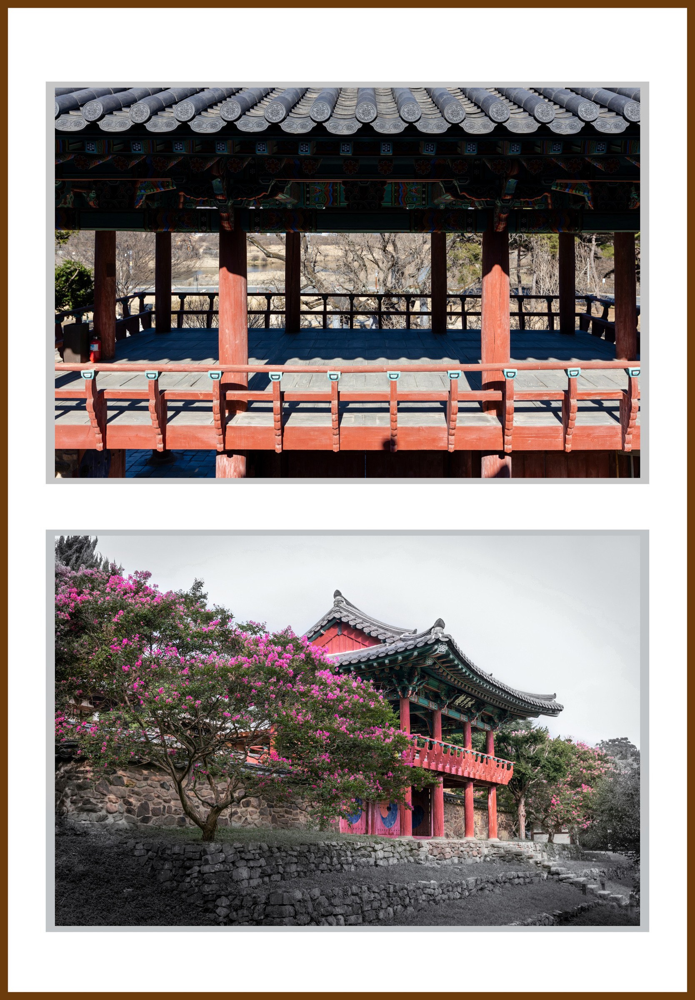
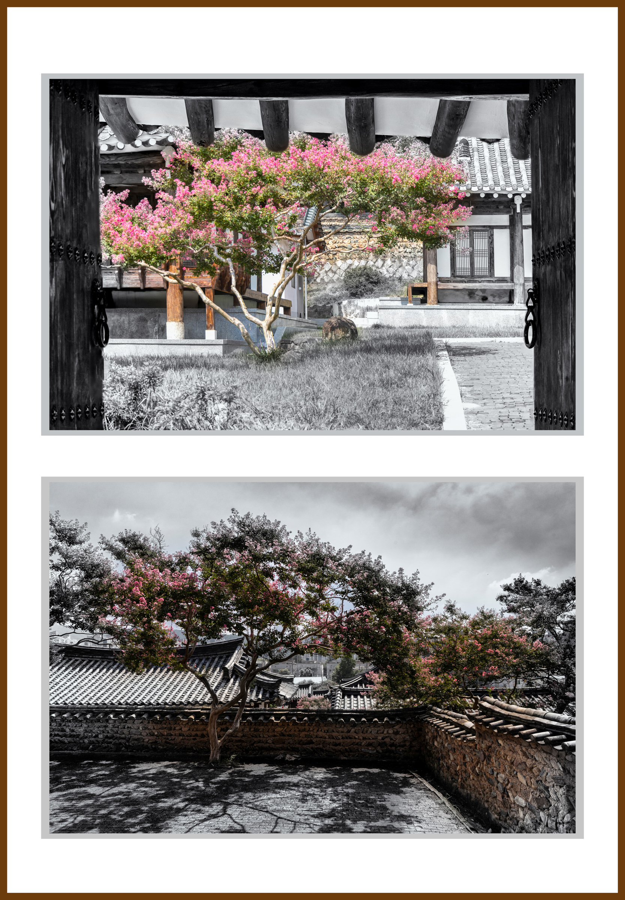
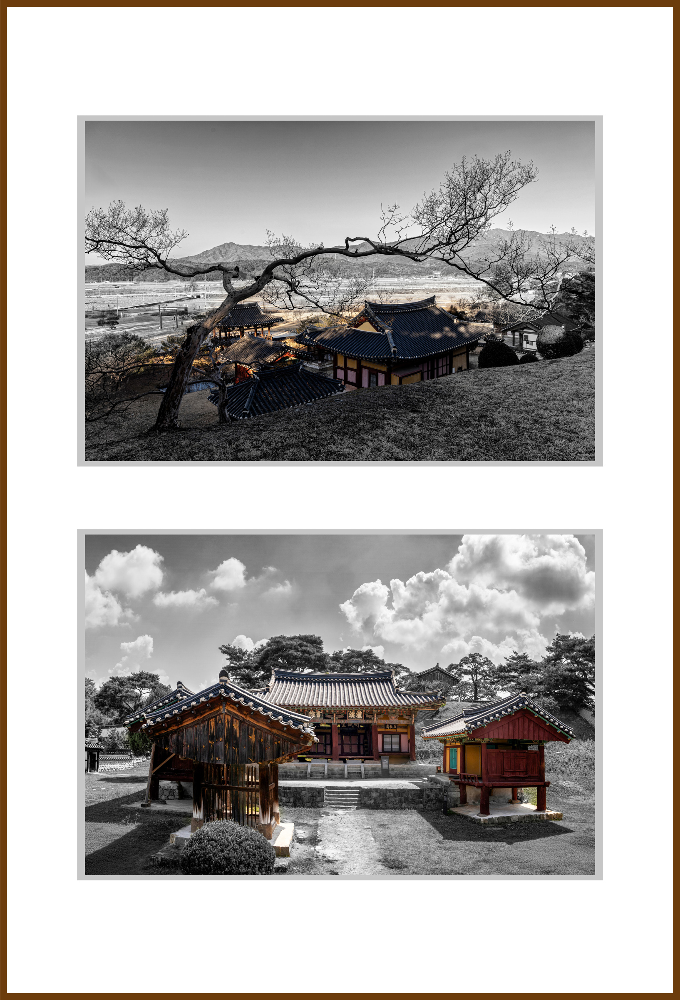
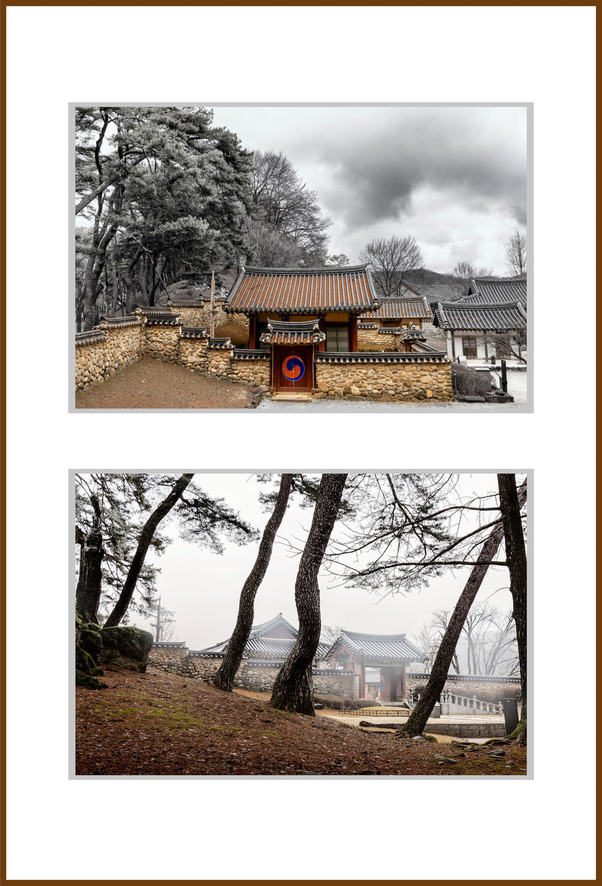
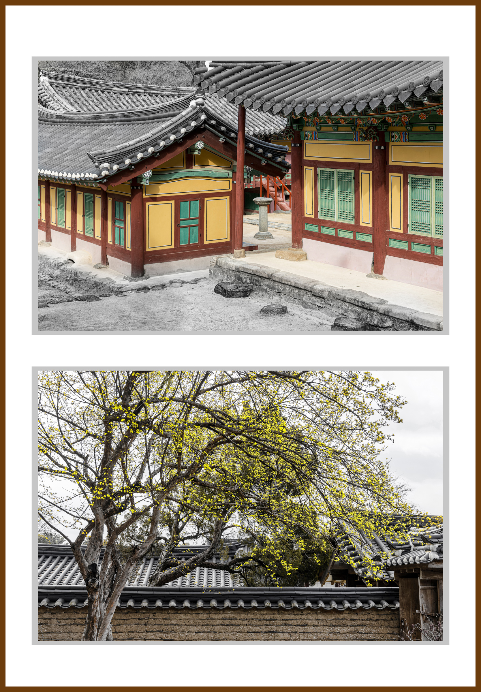
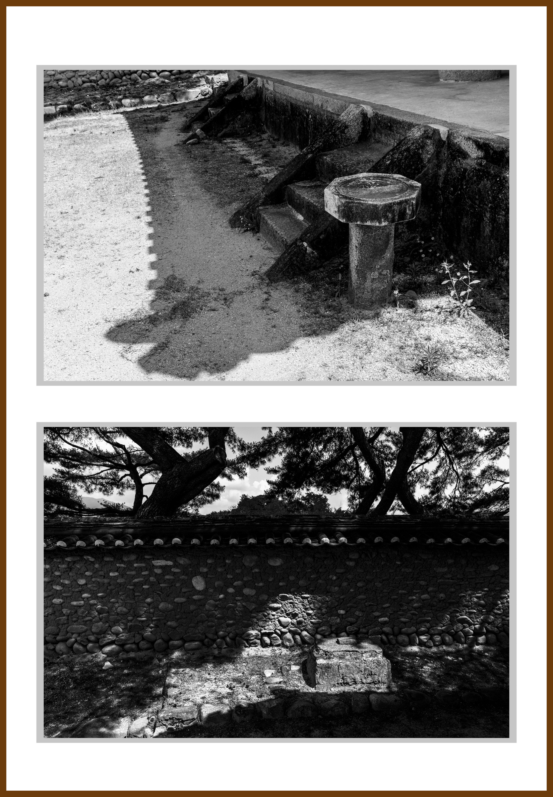
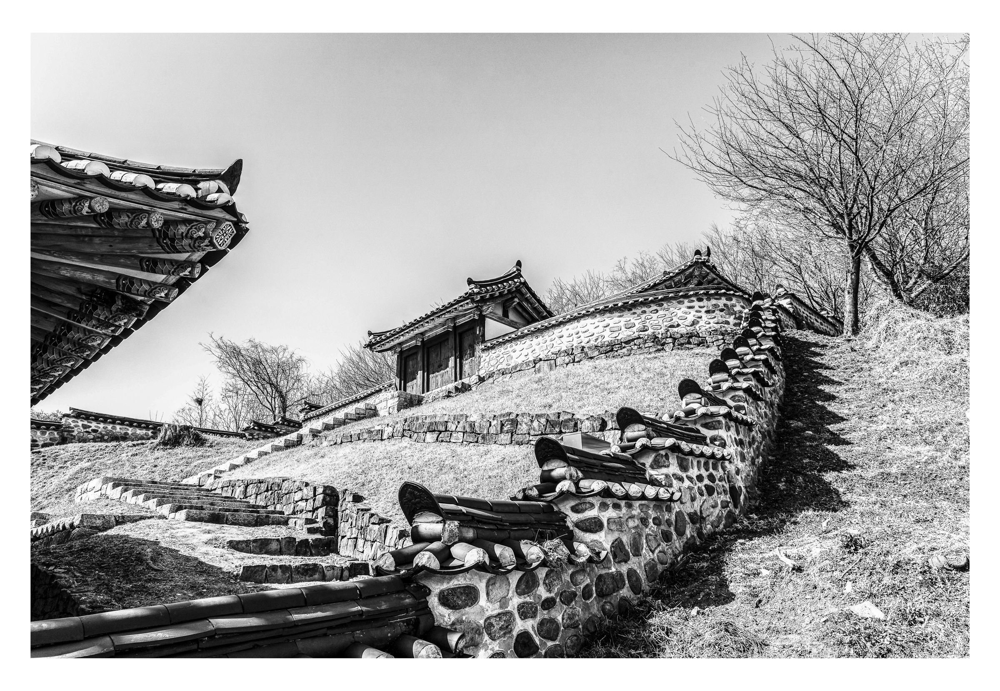
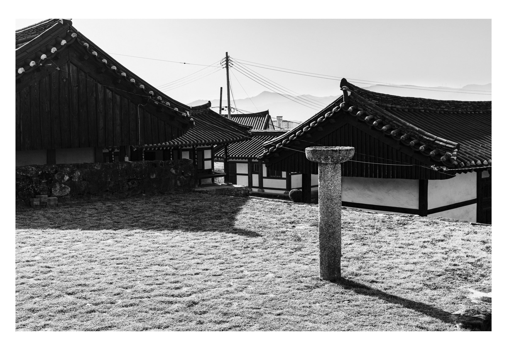
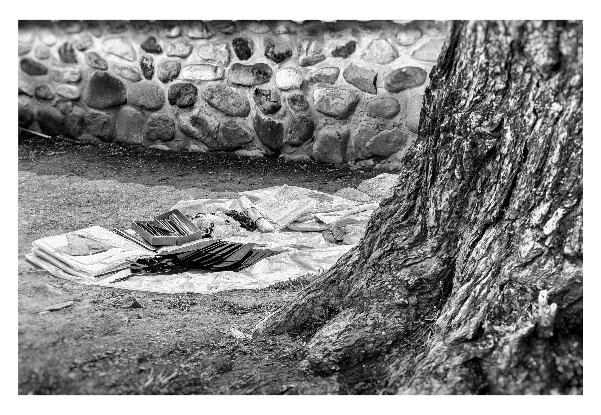
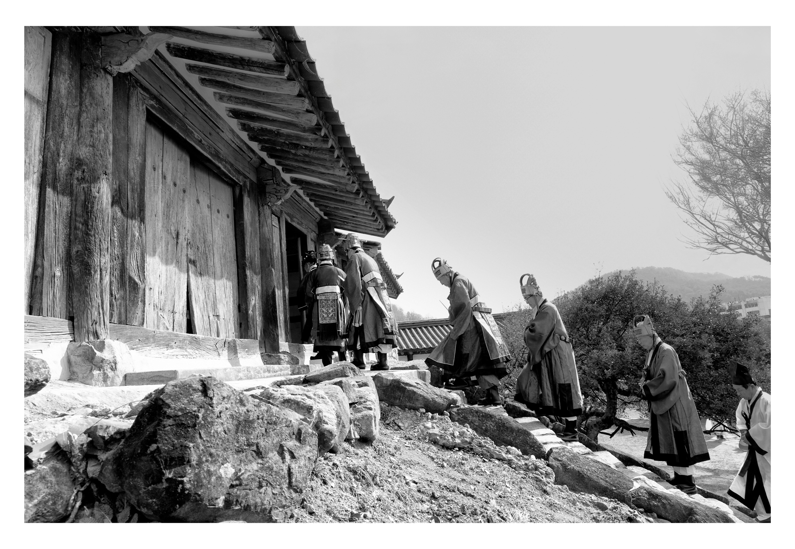
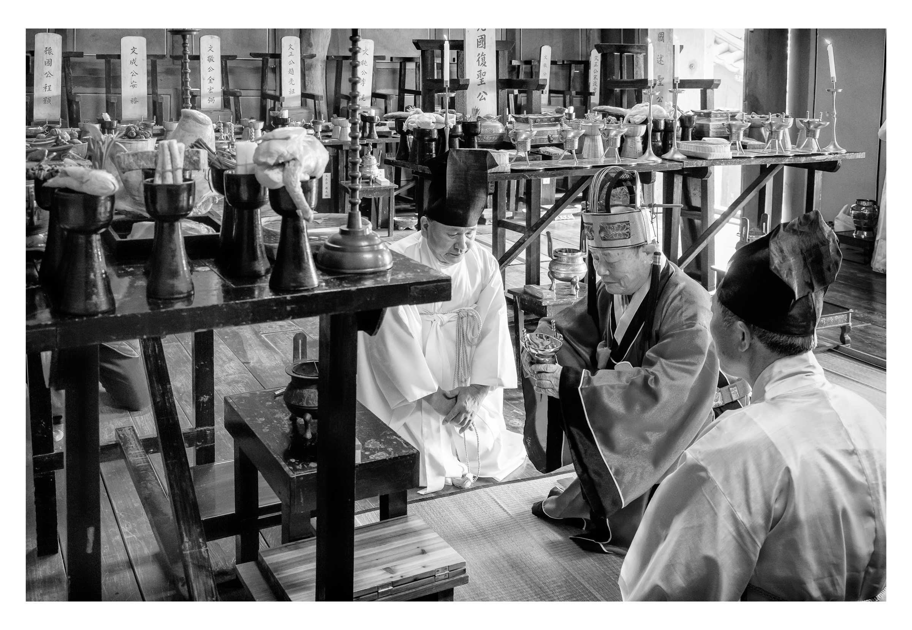
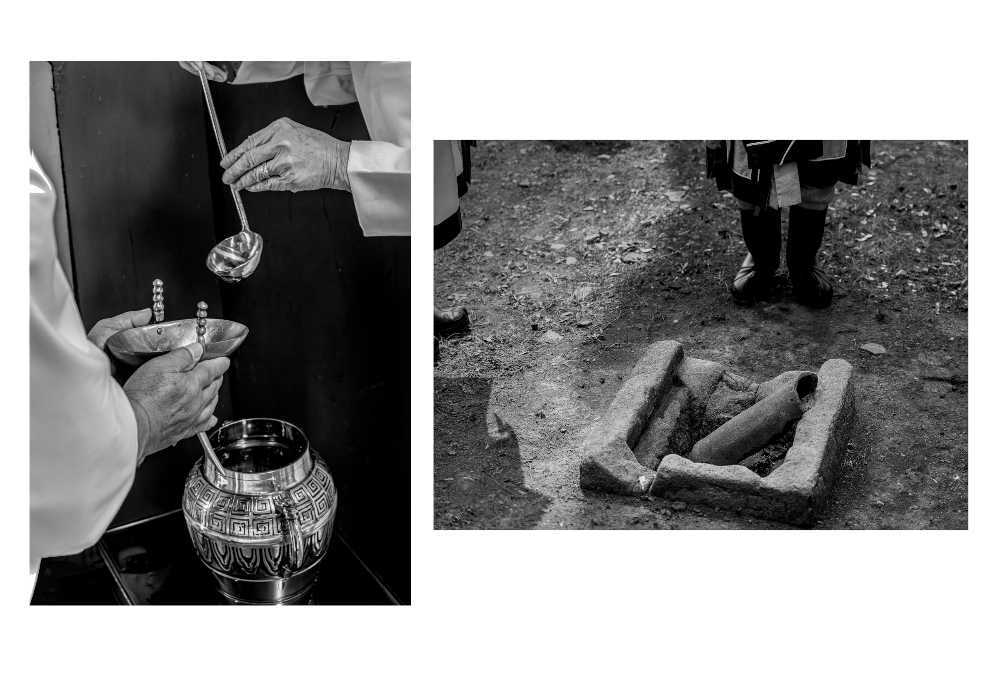